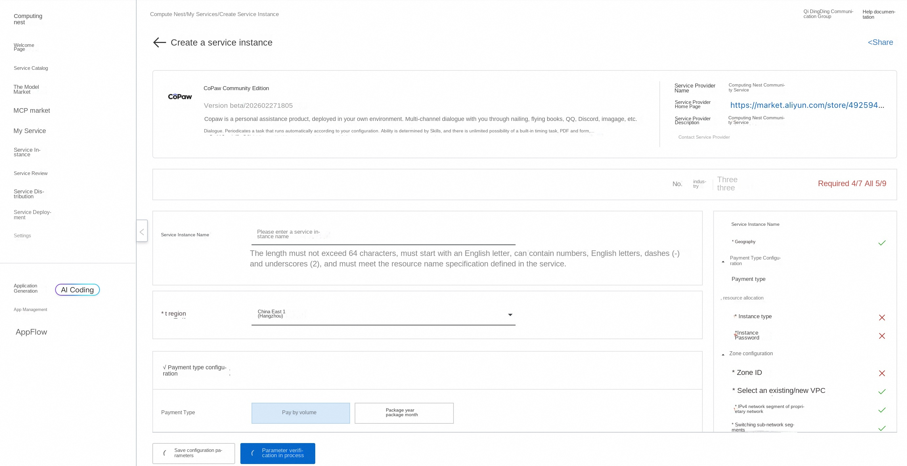
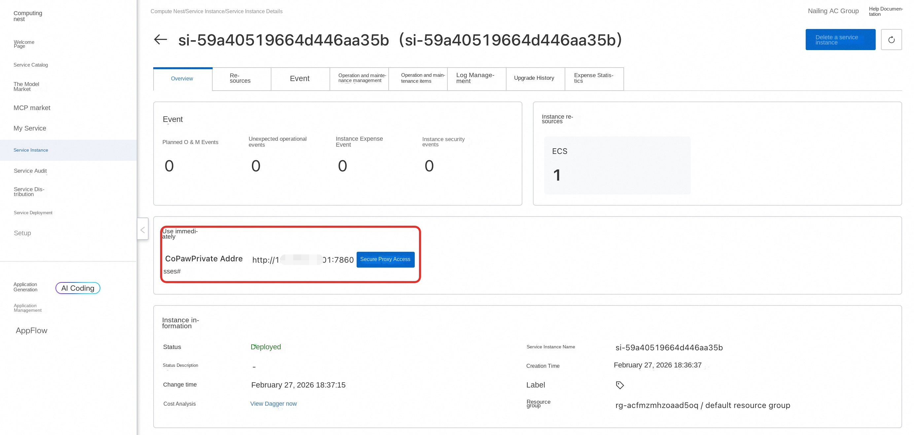
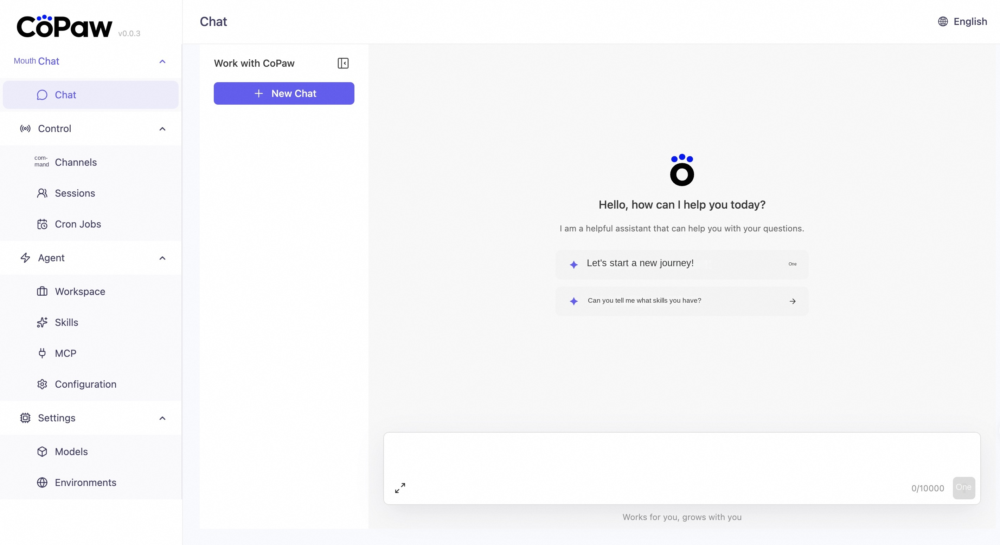
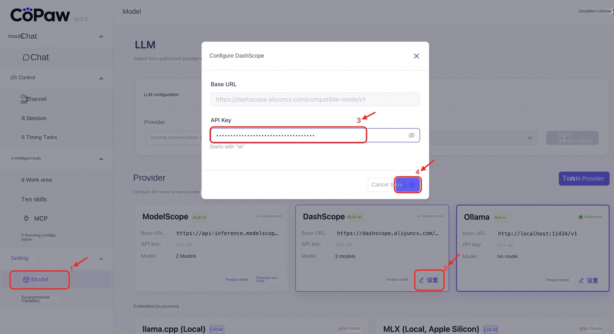
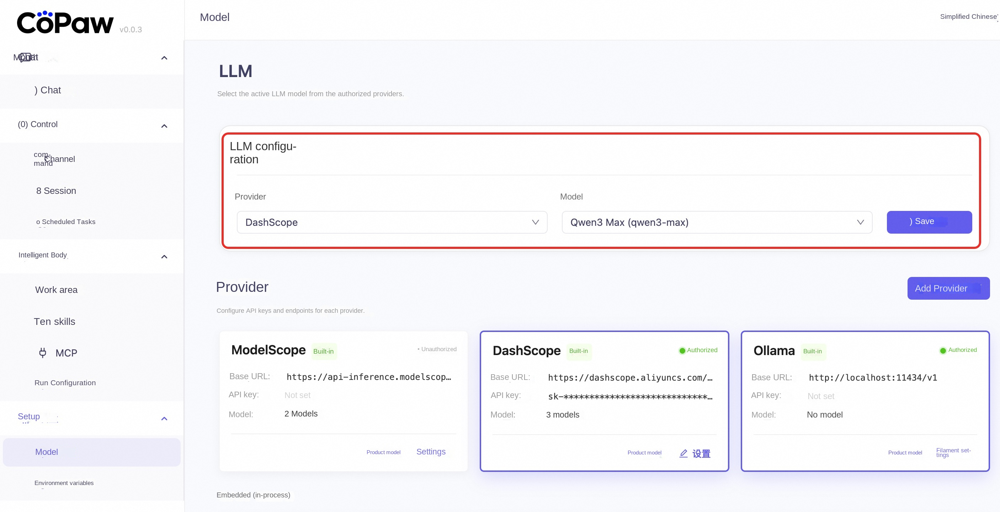
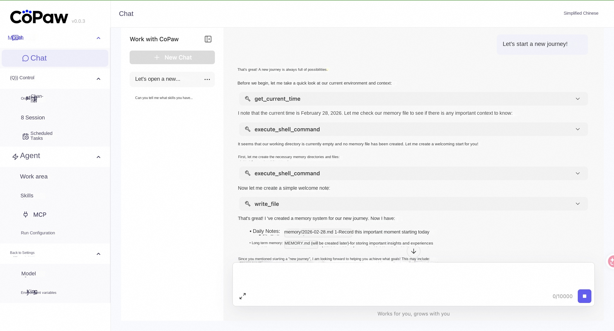
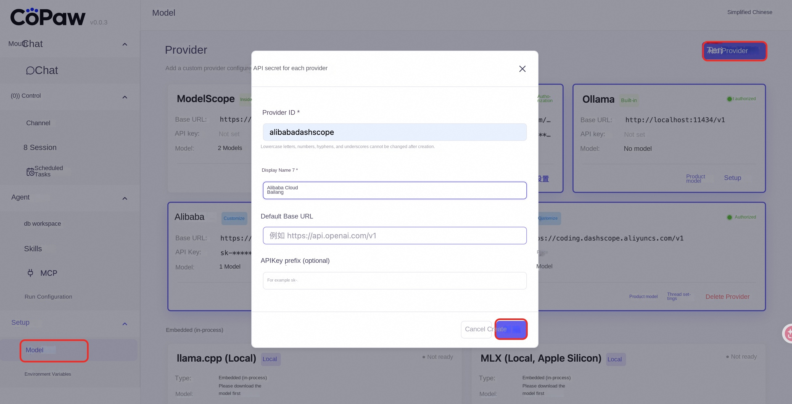
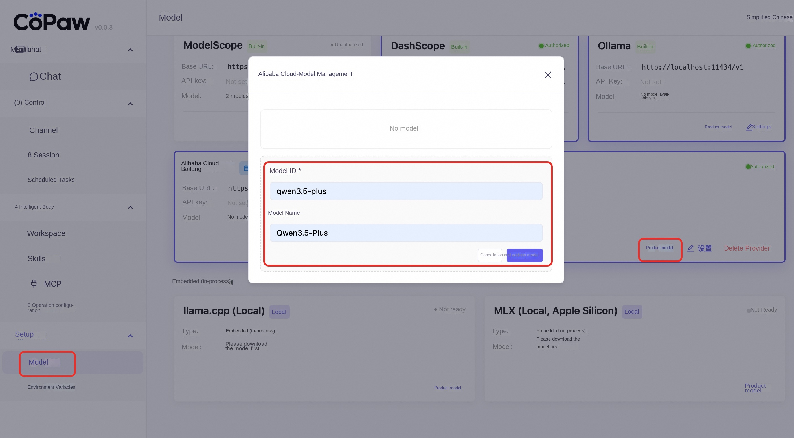
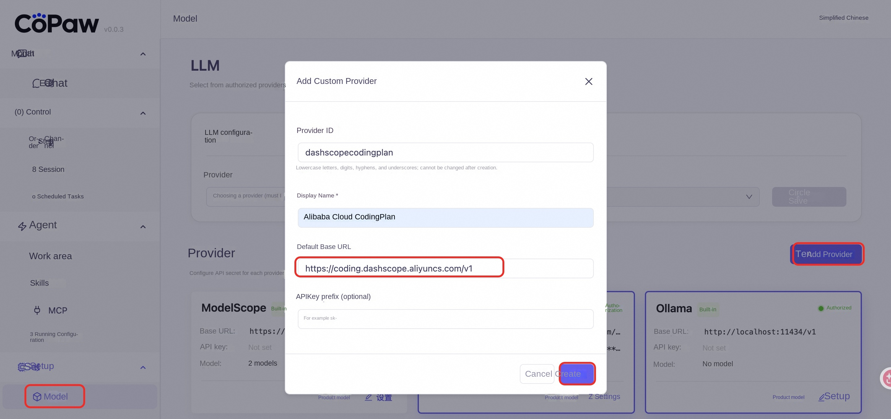

🐾CoPawService Introduction
CoPAWs are personal assistance products, deployed in your own environment: Multi-channel dialogue-through nailing, flying books, QQ, Discord, iMessage and other dialogue with you. Timed execution-Automatically run tasks according to your configuration. Capabilities are determined by Skills, with unlimited possibilities-built-in timed tasks, PDF and forms, Word/Excel/PPT document processing, news summaries, document reading, etc., and can be customized and expanded in Skills. The data is all local-not dependent on third-party hosting.
🚀Designing process
-
Visit the CoPawcommunity version of the computing nest deployment link and fill in the deployment parameters according to the page prompt:

-
After the parameter configuration is completed, the system will automatically generate cost estimation details. After confirming that there is no error, click Next: Confirm Order.
-
On the order confirmation page, check the instance information and expenses, and click * * Create Immediately * * to start automatic deployment.
-
Access address obtained after deployment:

-
Access Services:

-
Configuration of Bailian API_KEY(Get Bailian API_KEY):

-
Configuration model:

-
Opening Dialogue:

📚Use Guide
Please refer to CoPaw official document to understand the complete function.
Question feedback
In case of software Bug, can be solved through the following contact.
❓Common problems
How to configure other models
Settings> Model> Add Provider, enter the service provider information and click Create: Base_Url: https://dashscope.aliyuncs.com/compatible-mode/v1

Add model:

After the API KEY is set, you can talk to the added model.
How to configure the CodingPlan
Settings> Model> Add Provider, enter the service provider information and click Create: CodingPlan_Base_Url: https://coding.dashscope.aliyuncs.com/v1

Add models and configure 100 Refinery CodingPlan API KEY to start the dialogue.